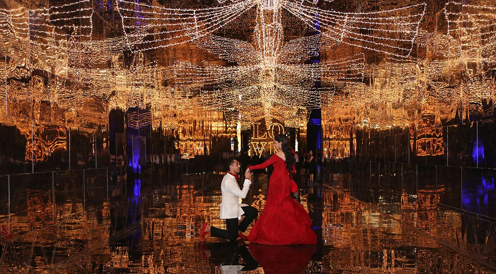
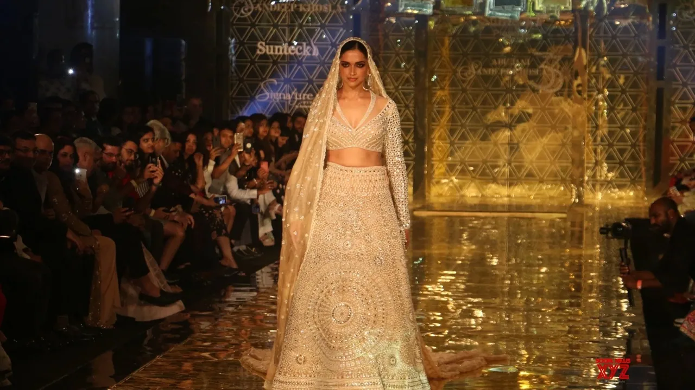
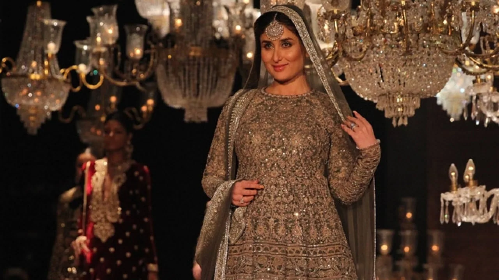

We know the cue sheet
Effects Tech designs and produces celebrations, so our photographers know when the lights will drop before anyone else in the room does.
Wedding Photography & Films · Malta
Effects Tech Studio photographs and films destination weddings across Malta: the bastions of Valletta, the silence of Mdina, the sea at St Julian's. Told the way a feature film is told.
Click the frame to take the next shot
01 The studio
We don't take pictures at weddings. We make the
 pictures your grandchildren will ask about: the
pictures your grandchildren will ask about: the
 moonlit pheras, the
moonlit pheras, the
 sangeet that ran till dawn, the
quiet second before the vows.
sangeet that ran till dawn, the
quiet second before the vows.
02 The light of Malta
Photography is light. Malta has some of the finest in Europe, but it moves fast. Slide through a wedding day to see where we take you, and when.

18:40
ST JULIAN'S SEAFRONT
The sun drops into the sea and everything turns to honey. We keep twenty minutes of every wedding day free for this alone.
WE SHOOT Pheras · couple film · family portraits
Times shown for a June wedding. We plan yours to the minute.
03 Selected stories
Before the album there is the contact sheet: every frame from the day, side by side. Run the loupe over a strip, then open the story.
04 Films
Shot on cinema cameras with prime lenses, scored and colour-graded like a feature. Your wedding film is the one you will actually watch again.
05 Before Malta
Palace weddings, couture weeks and celebrity editorials. Effects Tech has spent years lighting and filming the country's most watched celebrations. The same eye, the same discipline, now on the island.



06 Why couples choose us
Effects Tech designs and produces celebrations, so our photographers know when the lights will drop before anyone else in the room does.
Cinema cameras, fast prime lenses and drone coverage where permitted. Films graded like features, not wedding videos.
A ninety-second edit of your day, on the screen at your reception, cut by an editor working beside the crew.
Hand-bound albums on archival paper, and a private gallery your family can return to for decades.
07 Collections
I
Wedding photography
Most chosen
II
Photography & film
III
The full celebration
Every collection is tailored to your celebration. Investment is shared on request, with your date.
08 From first call to final frame
Your families, your traditions, the photographs you already know you want.
A minute-by-minute shot plan built around Malta's sun and your venues.
A pre-wedding shoot in Mdina or Valletta, so you meet the lens before the day.
Quiet, invisible crews. You will remember the day, not the cameras.
Teaser in two weeks, gallery in six, films and albums soon after.

09 Check your date